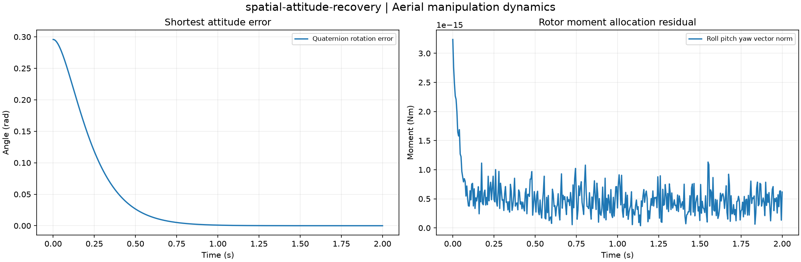

Reproducible Aerial manipulation dynamics. Units and field components are printed on the scientific axes. peak d-q quantities use exp(+i omega t); terminal currents point into the protected line.
Sealed numeric archive | Summary CSV | Physical parameters | Run request | Source and environment

| final_attitude_error_rad | 8.490655324607192e-07 |
|---|---|
| maximum_force_residual_n | 1.4210854715202004e-14 |
These are simulations, not hardware measurements. Network-model, measurement, timing and statistical uncertainty require distinct convergence checks. Singular or unilluminated data use explicit masks.
Source revision: 1930b2c54813555687ad78d238f2c0751830eb9c.
Dirty checkout: False.
Configuration SHA-256: bcaf101bd337c22d2bdecc961afa87b1c00a03fb640ba861e85ffe3288b2111e.
Replay preserves original source and parameter provenance. SHA-256 manifests detect changed bytes; they are unsigned integrity records, not certificates of physical validity.